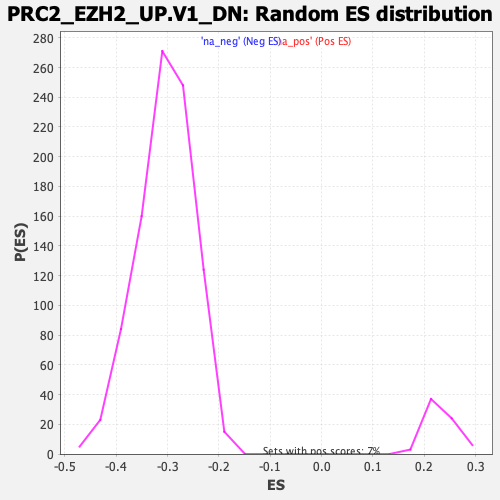

| | | Dataset | DE_genes2 |
| Phenotype | NoPhenotypeAvailable |
| Upregulated in class | na_neg |
| GeneSet | PRC2_EZH2_UP.V1_DN |
| Enrichment Score (ES) | -0.62140054 |
| Normalized Enrichment Score (NES) | -2.040529 |
| Nominal p-value | 0.0 |
| FDR q-value | 0.0 |
| FWER p-Value | 0.0 |
Table: GSEA Results Summary
 Fig 1: Enrichment plot: PRC2_EZH2_UP.V1_DN
Fig 1: Enrichment plot: PRC2_EZH2_UP.V1_DN
Profile of the Running ES Score & Positions of GeneSet Members on the Rank Ordered List
| PROBE | GENE SYMBOL | GENE_TITLE | RANK IN GENE LIST | RANK METRIC SCORE | RUNNING ES | CORE ENRICHMENT | | 1 | SLC2A6 | | | 101 | 6.046 | 0.0083 | No |
| 2 | PRSS1 | | | 145 | 5.509 | 0.0189 | No |
| 3 | CORO1A | | | 291 | 4.461 | 0.0208 | No |
| 4 | IFIT1 | | | 424 | 3.910 | 0.0221 | No |
| 5 | OCEL1 | | | 457 | 3.814 | 0.0293 | No |
| 6 | VPS37B | | | 1477 | 2.198 | -0.0276 | No |
| 7 | NFE2 | | | 1680 | 2.010 | -0.0351 | No |
| 8 | SYT11 | | | 1956 | 1.787 | -0.0476 | No |
| 9 | TRPM4 | | | 2030 | 1.733 | -0.0479 | No |
| 10 | HCFC1R1 | | | 2290 | 1.567 | -0.0600 | No |
| 11 | DOC2B | | | 2307 | 1.557 | -0.0572 | No |
| 12 | KCTD2 | | | 2354 | 1.521 | -0.0564 | No |
| 13 | APLP1 | | | 2445 | 1.468 | -0.0584 | No |
| 14 | KCNS1 | | | 2551 | 1.413 | -0.0614 | No |
| 15 | ZNF446 | | | 2580 | 1.398 | -0.0597 | No |
| 16 | MED18 | | | 2838 | 1.271 | -0.0724 | No |
| 17 | IQCC | | | 2974 | 1.207 | -0.0777 | No |
| 18 | TNFSF11 | | | 3148 | 1.133 | -0.0856 | No |
| 19 | KRT81 | | | 3167 | 1.125 | -0.0840 | No |
| 20 | RHPN1-AS1 | | | 3581 | 0.978 | -0.1068 | No |
| 21 | GNA15 | | | 3850 | 0.880 | -0.1211 | No |
| 22 | ATG16L1 | | | 3948 | 0.851 | -0.1249 | No |
| 23 | CACNA2D2 | | | 3953 | 0.850 | -0.1231 | No |
| 24 | DEPDC5 | | | 4295 | 0.751 | -0.1422 | No |
| 25 | LRRC61 | | | 4354 | 0.734 | -0.1439 | No |
| 26 | PLCD1 | | | 4360 | 0.732 | -0.1425 | No |
| 27 | SULF1 | | | 4373 | 0.728 | -0.1415 | No |
| 28 | PCYT1B | | | 4493 | 0.695 | -0.1471 | No |
| 29 | ELP6 | | | 4623 | 0.657 | -0.1534 | No |
| 30 | TBC1D2 | | | 4841 | 0.607 | -0.1652 | No |
| 31 | LRRC32 | | | 4855 | 0.604 | -0.1645 | No |
| 32 | ADAMTS5 | | | 5023 | 0.565 | -0.1733 | No |
| 33 | PITX1 | | | 5116 | 0.539 | -0.1777 | No |
| 34 | CAMK4 | | | 5407 | 0.468 | -0.1942 | No |
| 35 | SLC7A2 | | | 5461 | 0.458 | -0.1964 | No |
| 36 | NR6A1 | | | 5524 | 0.445 | -0.1991 | No |
| 37 | EPHX2 | | | 5616 | 0.423 | -0.2036 | No |
| 38 | FOXN3 | | | 5708 | 0.403 | -0.2082 | No |
| 39 | ZNF219 | | | 5742 | 0.395 | -0.2093 | No |
| 40 | GNB1L | | | 6189 | 0.307 | -0.2358 | No |
| 41 | LGALS7 | | | 6512 | 0.242 | -0.2549 | No |
| 42 | GRM4 | | | 6622 | 0.220 | -0.2610 | No |
| 43 | NPR3 | | | 6715 | 0.199 | -0.2661 | No |
| 44 | DDB2 | | | 6980 | 0.159 | -0.2819 | No |
| 45 | PEAK1 | | | 7206 | 0.115 | -0.2953 | No |
| 46 | GAS1 | | | 7229 | 0.111 | -0.2964 | No |
| 47 | INHBB | | | 7323 | 0.093 | -0.3018 | No |
| 48 | ZNF574 | | | 7537 | 0.059 | -0.3147 | No |
| 49 | DEF6 | | | 7557 | 0.055 | -0.3157 | No |
| 50 | RNF19A | | | 7769 | 0.022 | -0.3286 | No |
| 51 | MST1R | | | 7979 | -0.008 | -0.3413 | No |
| 52 | TPD52L1 | | | 8013 | -0.014 | -0.3433 | No |
| 53 | KCND1 | | | 8039 | -0.018 | -0.3448 | No |
| 54 | NPAS1 | | | 8339 | -0.064 | -0.3629 | No |
| 55 | HAS2 | | | 8542 | -0.100 | -0.3750 | No |
| 56 | OLFML2B | | | 8735 | -0.138 | -0.3863 | No |
| 57 | LMOD1 | | | 8802 | -0.151 | -0.3900 | No |
| 58 | SYN1 | | | 8990 | -0.191 | -0.4010 | No |
| 59 | IL17RB | | | 9071 | -0.207 | -0.4054 | No |
| 60 | ELL2 | | | 9768 | -0.392 | -0.4469 | No |
| 61 | FOSL2 | | | 10062 | -0.477 | -0.4636 | No |
| 62 | SOGA1 | | | 10086 | -0.486 | -0.4639 | No |
| 63 | HMOX1 | | | 10366 | -0.575 | -0.4795 | No |
| 64 | THBS2 | | | 10405 | -0.588 | -0.4804 | No |
| 65 | MXD3 | | | 10681 | -0.686 | -0.4956 | No |
| 66 | RDH5 | | | 10773 | -0.715 | -0.4994 | No |
| 67 | GJC2 | | | 10891 | -0.762 | -0.5047 | No |
| 68 | LRRC20 | | | 10908 | -0.769 | -0.5039 | No |
| 69 | TOX | | | 10918 | -0.772 | -0.5026 | No |
| 70 | THOP1 | | | 10958 | -0.785 | -0.5031 | No |
| 71 | NGF | | | 10968 | -0.789 | -0.5017 | No |
| 72 | ETS1 | | | 11245 | -0.899 | -0.5164 | No |
| 73 | PCK2 | | | 11387 | -0.962 | -0.5227 | No |
| 74 | PILRB | | | 11561 | -1.032 | -0.5308 | No |
| 75 | CYB5B | | | 11587 | -1.040 | -0.5298 | No |
| 76 | PDCD4-AS1 | | | 11596 | -1.044 | -0.5278 | No |
| 77 | AGTR1 | | | 11608 | -1.049 | -0.5260 | No |
| 78 | HAUS5 | | | 11688 | -1.082 | -0.5282 | No |
| 79 | LRP12 | | | 11766 | -1.114 | -0.5302 | No |
| 80 | INO80D | | | 11983 | -1.212 | -0.5405 | No |
| 81 | HOXD11 | | | 12118 | -1.280 | -0.5456 | No |
| 82 | AFF3 | | | 12248 | -1.349 | -0.5502 | No |
| 83 | LEMD3 | | | 12258 | -1.353 | -0.5475 | No |
| 84 | SOAT2 | | | 12317 | -1.382 | -0.5478 | No |
| 85 | BARX1 | | | 12471 | -1.463 | -0.5536 | No |
| 86 | CASC3 | | | 12495 | -1.474 | -0.5515 | No |
| 87 | PAN2 | | | 12586 | -1.527 | -0.5533 | No |
| 88 | HOXA10 | | | 12607 | -1.536 | -0.5508 | No |
| 89 | PSPH | | | 12696 | -1.586 | -0.5524 | No |
| 90 | XRCC3 | | | 12710 | -1.592 | -0.5494 | No |
| 91 | SYP | | | 12743 | -1.609 | -0.5475 | No |
| 92 | CPEB1 | | | 13137 | -1.849 | -0.5670 | No |
| 93 | METTL16 | | | 13232 | -1.911 | -0.5682 | No |
| 94 | CD320 | | | 13269 | -1.936 | -0.5657 | No |
| 95 | CDT1 | | | 13400 | -2.026 | -0.5688 | No |
| 96 | NUP37 | | | 14072 | -2.573 | -0.6036 | No |
| 97 | PTPRD | | | 14127 | -2.620 | -0.6006 | No |
| 98 | NUP43 | | | 14154 | -2.649 | -0.5958 | No |
| 99 | DDHD2 | | | 14444 | -2.928 | -0.6064 | No |
| 100 | GTPBP4 | | | 14505 | -2.989 | -0.6029 | No |
| 101 | CENPU | | | 14542 | -3.039 | -0.5978 | No |
| 102 | LPGAT1 | | | 14929 | -3.546 | -0.6129 | Yes |
| 103 | MCM2 | | | 15006 | -3.658 | -0.6088 | Yes |
| 104 | TACC3 | | | 15038 | -3.698 | -0.6018 | Yes |
| 105 | CDC25A | | | 15082 | -3.764 | -0.5954 | Yes |
| 106 | SLC8A1 | | | 15083 | -3.764 | -0.5863 | Yes |
| 107 | OXTR | | | 15201 | -3.918 | -0.5841 | Yes |
| 108 | BCCIP | | | 15305 | -4.124 | -0.5805 | Yes |
| 109 | EZH2 | | | 15352 | -4.214 | -0.5732 | Yes |
| 110 | RAD54L | | | 15435 | -4.365 | -0.5677 | Yes |
| 111 | DNA2 | | | 15436 | -4.365 | -0.5572 | Yes |
| 112 | EXOSC8 | | | 15447 | -4.383 | -0.5473 | Yes |
| 113 | MYBL2 | | | 15492 | -4.462 | -0.5393 | Yes |
| 114 | CHM | | | 15562 | -4.616 | -0.5324 | Yes |
| 115 | HP1BP3 | | | 15579 | -4.656 | -0.5223 | Yes |
| 116 | OXNAD1 | | | 15591 | -4.681 | -0.5117 | Yes |
| 117 | OIP5 | | | 15659 | -4.836 | -0.5042 | Yes |
| 118 | KNTC1 | | | 15665 | -4.846 | -0.4929 | Yes |
| 119 | POLR3G | | | 15786 | -5.092 | -0.4880 | Yes |
| 120 | RFC4 | | | 15807 | -5.149 | -0.4768 | Yes |
| 121 | DPY19L4 | | | 15816 | -5.172 | -0.4649 | Yes |
| 122 | PUS7 | | | 15836 | -5.238 | -0.4535 | Yes |
| 123 | NCAPH | | | 15843 | -5.247 | -0.4413 | Yes |
| 124 | PRIM1 | | | 15856 | -5.276 | -0.4294 | Yes |
| 125 | HELLS | | | 15936 | -5.474 | -0.4211 | Yes |
| 126 | PSRC1 | | | 16011 | -5.700 | -0.4119 | Yes |
| 127 | LBR | | | 16028 | -5.754 | -0.3991 | Yes |
| 128 | ECT2 | | | 16082 | -5.906 | -0.3881 | Yes |
| 129 | AURKB | | | 16120 | -6.007 | -0.3760 | Yes |
| 130 | BUB1 | | | 16142 | -6.084 | -0.3627 | Yes |
| 131 | KLHL11 | | | 16144 | -6.096 | -0.3481 | Yes |
| 132 | TFAM | | | 16168 | -6.208 | -0.3346 | Yes |
| 133 | LMNB1 | | | 16178 | -6.259 | -0.3201 | Yes |
| 134 | HJURP | | | 16210 | -6.380 | -0.3067 | Yes |
| 135 | KIF4A | | | 16226 | -6.459 | -0.2921 | Yes |
| 136 | MIS18BP1 | | | 16234 | -6.494 | -0.2770 | Yes |
| 137 | WDR76 | | | 16253 | -6.571 | -0.2623 | Yes |
| 138 | CDC45 | | | 16272 | -6.693 | -0.2474 | Yes |
| 139 | NFIB | | | 16319 | -6.978 | -0.2334 | Yes |
| 140 | DSCC1 | | | 16359 | -7.253 | -0.2184 | Yes |
| 141 | RPS6KA6 | | | 16410 | -7.867 | -0.2026 | Yes |
| 142 | FKBP5 | | | 16412 | -7.889 | -0.1837 | Yes |
| 143 | TTK | | | 16444 | -8.189 | -0.1660 | Yes |
| 144 | KIF15 | | | 16449 | -8.254 | -0.1464 | Yes |
| 145 | MCM10 | | | 16471 | -8.676 | -0.1269 | Yes |
| 146 | DLGAP5 | | | 16482 | -9.145 | -0.1056 | Yes |
| 147 | SKP2 | | | 16506 | -10.608 | -0.0815 | Yes |
| 148 | CENPF | | | 16507 | -10.688 | -0.0559 | Yes |
| 149 | DEPDC1 | | | 16522 | -11.603 | -0.0289 | Yes |
| 150 | HMMR | | | 16528 | -12.240 | 0.0002 | Yes |
Table: GSEA details [plain text format]

Fig 2: PRC2_EZH2_UP.V1_DN: Random ES distribution
Gene set null distribution of ES for PRC2_EZH2_UP.V1_DN